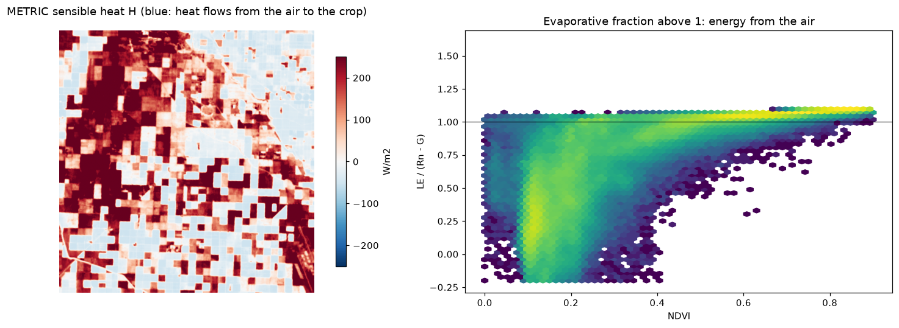
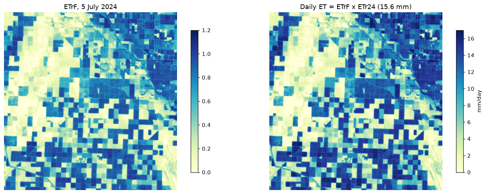
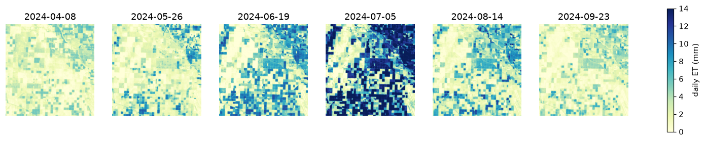
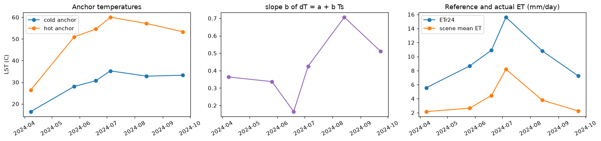

METRIC, Mapping EvapoTranspiration at high Resolution with Internalized Calibration (Allen et al. 2007), keeps SEBAL’s machinery and changes its two weakest assumptions. Instead of assuming that the cold anchor has no sensible heat, it sets the cold anchor’s ET to that of a well watered alfalfa reference computed from weather, which lets irrigated fields evaporate more than their net radiation when hot, dry air flows over them. Instead of scaling the image to a day with net radiation, it scales with the same reference: the fraction of reference ET (ETrF) is assumed constant through the day. METRIC is the basis of eeMETRIC in OpenET and of many state water agencies’ ET programmes in the western United States. This notebook calibrates METRIC on the 5 July 2024 scene, compares it with SEBAL, and repeats the calibration through the 2024 season.
Overview
What METRIC changes
Step
SEBAL
METRIC
Cold anchor
H = 0, LE = Rn - G
ET = 1.05 ETr, H = Rn - G - 1.05 ETr lambda (can be negative)
Hot anchor
LE = 0
ET = ETrF_hot ETr, with ETrF_hot from a daily soil water balance of bare soil (FAO-56 evaporation); 0 after a long dry period
dT calibration
on Ts
on Ts_datum, LST moved to a common elevation with a lapse rate (mountain scenes)
Incoming shortwave
flat ground
slope and aspect of every pixel
Daily ET
EF Rn24
ETrF ETr24
Monthly and seasonal ET
ETrF interpolated between images, times daily ETr (notebook 10)
Why 1.05 ETr at the cold anchor
The alfalfa reference represents a tall, dense, well watered crop. Allen et al. (2007) found that the coolest, fully vegetated fields in an agricultural scene typically evaporate about 5 % more than the reference, because they are slightly rougher, wetter or warmer-surrounded than a reference field. More recent METRIC applications often use 1.0 for the cold anchor and account for the extra 5 % elsewhere; the value is a parameter (etrf_cold).
Why the reference ET fraction carries the day
EF is constant through a day only if the energy partition does not change. In advective regions the afternoon brings hotter, drier air, so ET rises relative to Rn - G and EF increases during the day. ETrF holds better, because the alfalfa reference responds to the same advection. Allen et al. (2007) and many studies since found ETrF from a late morning image to be a good estimate of the 24 hour ratio for irrigated crops.
The hot anchor after rain
A bare field that was wetted by rain in the last days still evaporates. METRIC runs the FAO-56 soil evaporation model (a two stage water balance of the top 10 cm) with daily rain and reference ET to estimate ETrF_hot. In the dry San Joaquin summer the last rain is months back and ETrF_hot = 0.
METRIC: H, LE, instantaneous ET, ETrF and daily ET
seb.asce_pm_hourly, seb.asce_pm_daily
alfalfa reference ET at the overpass and for the day (notebook 02)
seb.datum_temperature
LST moved to a common elevation
seb.calibration_history, seb.anchor_report
the calibration record
sd.run_metric_scene
METRIC with the chapter defaults for any cached scene
Learning objectives
Explain the two METRIC changes to SEBAL and why they matter in advective climates.
Calibrate METRIC with hourly alfalfa reference ET and inspect the calibration.
Map ETrF and daily ET, and read ETrF as a satellite crop coefficient.
Compare METRIC and SEBAL on the same scene and explain the differences.
Estimate the hot anchor’s ETrF from recent rain.
Calibrate METRIC through a season and follow how the calibration changes.
Data
The 5 July 2024 Landsat 8 scene and five more 2024 scenes of the Westside San Joaquin Valley (sd.load_scene), the inputs of notebooks 03 and 04 (sd.energy_inputs), and hourly and daily ERA5 weather for reference ET.
Contents
Setup
Reference ET and the hot anchor
Calibrating METRIC
Sensible heat below zero
ETrF and daily ET
METRIC and SEBAL
The datum temperature
A season of calibrations
Summary and exercises
Setup
Installation. This notebook needs installation option 5 (core, spatial analysis, spatial statistics, geostatistics and remote sensing): pip install "geolattice[remote-sensing]". See “Installation options” in the GeoLattice README.
Code
import warnings # warning controlwarnings.filterwarnings("ignore") # hide routine library warningsfrom pathlib import Path # file pathsimport matplotlib.pyplot as plt # figuresimport numpy as np # arraysimport pandas as pd # tablesimport rioxarray # noqa: F401 (registers the .rio accessor)import xarray as xr # labelled rastersimport geolattice # GeoLatticeimport geolattice.rsense.surface_energy_balance as seb # energy balance and ET modelsimport seb_data as sd # chapter helper: downloads, caches and loads the scenesplt.rcParams.update({"figure.dpi": 110}) # figure resolutionOUT = Path("outputs") # results written by this chapterOUT.mkdir(exist_ok=True) # create it if neededprint("GeoLattice", geolattice.__version__, "| data folder", sd.DATA.relative_to(sd.DATA.parents[3])) # versions and pathsds = sd.load_scene() # Landsat 8, 5 July 2024p = sd.energy_inputs(ds) # radiation, soil heat flux, roughness, anchors, reference EText = [float(ds.x.min()), float(ds.x.max()), float(ds.y.min()), float(ds.y.max())] # map extentGROUPS = {"Tree crops": [75, 204, 76, 211, 212, 217], "Grapes": [69], "Annual crops": [54, 2, 1, 36, 208, 24, 21, 51],"Fallow": [61], "Grass and shrubs": [176, 152], "Developed": [121, 122, 123, 124]} # CDL codes per groupdef by_group(**layers): # mean of each layer per crop group df = xr.Dataset(layers).assign(cdl=ds.cdl).to_dataframe().dropna() # one row per pixelreturn pd.DataFrame({g: df[df.cdl.isin(c)].drop(columns=["cdl", "spatial_ref"], errors="ignore").mean()for g, c in GROUPS.items()}).T # group means
GeoLattice 0.3.49 | data folder GeoLattice/Data/08_remote_sensing/08_12_surface_energy_balance
Reference ET and the hot anchor
sd.energy_inputs already computed the alfalfa reference ET at the overpass and for the day from ERA5 (notebook 02). The hot anchor’s ETrF depends on how long ago it last rained.
Code
print(f"ETr at the overpass {p['etr_inst']:.3f} mm/h | ETr for the day {p['etr_daily']:.2f} mm | ETo for the day {p['eto_daily']:.2f} mm") # reference ETrain = sd.weather(sd.WESTSIDE, "2024-01-01", "2024-12-31")["daily"]["precipitation_sum"] # ERA5 daily rainwet = rain[(rain.index <"2024-07-05") & (rain >2)] # days with more than 2 mm before the imageprint(f"last day with more than 2 mm of rain: {wet.index.max():%d %B %Y} ({(pd.Timestamp('2024-07-05') - wet.index.max()).days} days before the image)") # dry spellprint(f"rain in the 30 days before the image: {rain.loc['2024-06-05':'2024-07-04'].sum():.1f} mm") # recent rain
ETr at the overpass 0.931 mm/h | ETr for the day 15.61 mm | ETo for the day 10.70 mm
last day with more than 2 mm of rain: 05 May 2024 (61 days before the image)
rain in the 30 days before the image: 0.0 mm
After two months without rain the top soil of a bare field is dry and the FAO-56 evaporation model gives ETrF_hot of zero, so the hot anchor is treated as in SEBAL.
Calibrating METRIC
The cold anchor must evaporate 1.05 ETr, the hot anchor nothing. Converting the instantaneous ETr to a latent heat flux gives the energy each anchor uses.
Code
anchors = p["anchors"] # the automated anchors of notebook 05cy, cx, hy, hx = anchors["cold"]["iy"], anchors["cold"]["ix"], anchors["hot"]["iy"], anchors["hot"]["ix"] # rows and columnslam =float(seb.latent_heat_of_vaporization(anchors["cold"]["lst"])) # J/kg at the cold anchorle_cold =1.05* p["etr_inst"] * lam /3600# W/m2avail_cold =float(p["rn"][cy, cx] - p["g"][cy, cx]) # Rn - G at the cold anchorprint(f"cold anchor: Rn - G = {avail_cold:.0f} W/m2, LE = 1.05 ETr = {le_cold:.0f} W/m2, so H = {avail_cold - le_cold:.0f} W/m2") # cold anchor energyres = seb.run_metric(p["lst"], p["rn"], p["g"], p["zom"], p["u200"], p["pressure"], p["etr_inst"], anchors=anchors, etrf_cold=1.05, etrf_hot=0.0, etr_daily=p["etr_daily"]) # METRIChist = seb.calibration_history(res) # iterationsprint(f"converged after {res.attrs['iterations']} iterations: dT = {res.attrs['a']:.2f} + {res.attrs['b']:.4f} Ts") # calibrationhist.round(3) # the iterations
cold anchor: Rn - G = 605 W/m2, LE = 1.05 ETr = 657 W/m2, so H = -52 W/m2
converged after 5 iterations: dT = -136.57 + 0.4258 Ts
rah_hot
rah_cold
u_star_hot
dt_hot
dt_cold
a
b
h_hot
L_hot
iteration
1
60.502
42.958
0.121
18.005
-1.984
-250.533
0.806
328.931
-0.490
2
13.170
69.338
0.150
3.900
-3.204
-91.534
0.286
313.282
-0.945
3
17.455
86.884
0.150
5.400
-4.030
-121.291
0.380
328.800
-0.905
4
17.144
100.778
0.150
5.280
-4.687
-128.618
0.402
327.182
-0.909
5
17.176
113.035
0.150
5.291
-5.268
-136.572
0.426
327.314
-0.909
The cold anchor uses more energy for evaporation than its Rn - G: under the hot, dry air of this heat wave, 1.05 x 0.93 mm/h needs 657 W m-2 against 605 W m-2 of Rn - G, so the anchor must draw about 52 W m-2 of heat from the air (negative H). Its dT is negative, the air is warmer than the surface, and the stable air above it raises its rah. The calibration line is steeper than SEBAL’s, because it now spans from a negative dT at the cold end to the hot anchor’s dT.
Sensible heat below zero
Code
neg =float((res.h <0).sum() / res.h.notnull().sum()) # share of pixels with H < 0print(f"pixels with H < 0: {neg:.1%}") # advectionfig, ax = plt.subplots(1, 2, figsize=(14, 5)) # two mapsim = ax[0].imshow(res.h, extent=ext, cmap="RdBu_r", vmin=-250, vmax=250); plt.colorbar(im, ax=ax[0], shrink=0.8, label="W/m2") # H mapax[0].set_title("METRIC sensible heat H (blue: heat flows from the air to the crop)"); ax[0].axis("off") # titlelam_map = seb.latent_heat_of_vaporization(p["lst"]) # J/kgratio = res.le / (p["rn"] - p["g"]) # LE / (Rn - G), the evaporative fraction without clippingax[1].hexbin(p["ndvi"].values.ravel(), ratio.values.ravel(), gridsize=60, bins="log", extent=(0, 0.9, -0.2, 1.6)) # EF vs NDVIax[1].axhline(1, color="k", lw=0.7); ax[1].set_xlabel("NDVI"); ax[1].set_ylabel("LE / (Rn - G)") # labelsax[1].set_title("Evaporative fraction above 1: energy from the air"); plt.tight_layout(); plt.show() # draw
pixels with H < 0: 37.2%

37 % of the pixels have negative H, and many vegetated fields have LE > Rn - G. This is what makes METRIC suited to irrigated land in arid climates: SEBAL’s cold anchor rule caps every field at LE = Rn - G.
ETrF and daily ET
ETrF is the satellite equivalent of a crop coefficient relative to alfalfa. seb.run_metric clips it to 0 to 1.3 before multiplying by the daily reference ET.
Code
fig, ax = plt.subplots(1, 2, figsize=(14, 5)) # two mapsim = ax[0].imshow(res.etrf, extent=ext, cmap="YlGnBu", vmin=0, vmax=1.2); plt.colorbar(im, ax=ax[0], shrink=0.8) # ETrFax[0].set_title("ETrF, 5 July 2024"); ax[0].axis("off") # titleim = ax[1].imshow(res.et24, extent=ext, cmap="YlGnBu", vmin=0, vmax=17); plt.colorbar(im, ax=ax[1], shrink=0.8, label="mm/day") # daily ETax[1].set_title(f"Daily ET = ETrF x ETr24 ({p['etr_daily']:.1f} mm)"); ax[1].axis("off") # titleplt.tight_layout(); plt.show() # drawcrops = ds.cdl.where(p["mask"]).to_series().value_counts().index[:12] # the 12 most common classestab = pd.DataFrame({sd.cdl_name(c): {"pixels": int((ds.cdl == c).sum()), "ETrF median": float(res.etrf.where(ds.cdl == c).median()),"ETrF p90": float(res.etrf.where(ds.cdl == c).quantile(0.9)),"daily ET (mm)": float(res.et24.where(ds.cdl == c).median())} for c in crops}).T # per crop classtab.sort_values("ETrF median", ascending=False).round(2) # table

pixels
ETrF median
ETrF p90
daily ET (mm)
Tomatoes
79364.0
0.92
0.95
14.35
Almonds
81227.0
0.90
1.02
14.12
Cotton
41084.0
0.86
0.97
13.44
Grapes
55411.0
0.84
0.94
13.07
Pistachios
162036.0
0.71
0.89
11.14
Chickpeas
16702.0
0.44
0.60
6.88
Garlic
18961.0
0.41
0.53
6.42
Developed, low intensity
18668.0
0.39
0.74
6.15
Developed, open space
17141.0
0.38
0.74
5.94
Grassland/pasture
49785.0
0.23
0.55
3.57
Winter wheat
48912.0
0.18
0.56
2.88
Fallow/idle cropland
145704.0
0.15
0.36
2.34
The table reads like a list of crop coefficients for early July: well watered, near full-cover crops have ETrF close to 1, orchards somewhat less (they do not cover the ground fully, and many growers deficit-irrigate pistachios and almonds in summer), and fallow land close to zero. The 90th percentile shows the best watered fields of each crop.
METRIC and SEBAL
Both models were run on the same inputs and anchors. The difference comes from the two METRIC changes.
At the overpass the two models differ moderately: METRIC’s LE is 80 to 100 W m-2 higher over the crops (its cold anchor takes heat from the air) and about 40 W m-2 higher over fallow land, where both models are tied to the same hot anchor. Daily ET differs much more. SEBAL scales by the 24 hour net radiation, about 195 W m-2 here, while METRIC scales by the 24 hour alfalfa reference ET of 15.6 mm, which corresponds to some 440 W m-2 of evaporation. On a heat wave day with strong advection the reference captures the extra energy the air delivers in the afternoon; net radiation does not. This is why scaling with reference ET is preferred for irrigated crops in arid regions, and why eeMETRIC rather than an EF-based daily scaling is part of OpenET. Notebook 11 compares the models with independent estimates.
The datum temperature
In mountainous scenes, air cools with elevation, and a high field looks cold because it is high, not because it evaporates. METRIC calibrates dT on LST moved to a common elevation with a lapse rate (6.5 K per km). The Westside floor spans only about 100 m, so the effect here is small, but the code is the same anywhere.
Code
lst_datum = seb.datum_temperature(p["lst"], ds.dem) # LST at the median elevationres_d = seb.run_metric(p["lst"], p["rn"], p["g"], p["zom"], p["u200"], p["pressure"], p["etr_inst"], anchors=anchors, etr_daily=p["etr_daily"], lst_dt=lst_datum) # METRIC on the datum temperaturediff = res_d.et24 - res.et24 # mm/dayprint(f"datum elevation {lst_datum.attrs['z_ref']:.0f} m | LST shifted by {float((lst_datum - p['lst']).min()):+.2f} to {float((lst_datum - p['lst']).max()):+.2f} K") # shiftprint(f"daily ET change: mean {float(diff.mean()):+.3f} mm, 99th percentile of |change| {float(np.abs(diff).quantile(0.99)):.3f} mm") # effect
datum elevation 66 m | LST shifted by -0.15 to +0.48 K
daily ET change: mean -0.020 mm, 99th percentile of |change| 0.216 mm
A season of calibrations
sd.run_metric_scene applies the same chain (inputs, automated anchors, reference ET, METRIC) to any cached scene. Six dates from April to September show how the calibration changes with the season.
Code
DATES = ["LC09_L2SP_042035_20240408_02_T1", "LC09_L2SP_042035_20240526_02_T1", "LC08_L2SP_042035_20240619_02_T1","LC08_L2SP_042035_20240705_02_T1", "LC09_L2SP_042035_20240814_02_T1", "LC08_L2SP_042035_20240923_02_T1"] # six scenesrows, maps = [], {} # calibration table and daily ET mapsfor sid in DATES: # every scene s = sd.load_scene(sid) # cached stack q = sd.energy_inputs(s) # its inputs and anchors r = sd.run_metric_scene(s, q) # METRIC date = pd.Timestamp(s.attrs["datetime"]).date() # image date maps[date] = r.et24 # keep the daily ET map rows.append({"date": date, "air C": round(s.attrs["t_air_c"], 1), "ETr inst (mm/h)": q["etr_inst"], "ETr24 (mm)": q["etr_daily"],"cold LST (C)": q["anchors"]["cold"]["lst"] -273.15, "hot LST (C)": q["anchors"]["hot"]["lst"] -273.15,"a": r.attrs["a"], "b": r.attrs["b"], "iterations": r.attrs["iterations"],"ETrF scene median": float(r.etrf.median()), "ET24 scene mean (mm)": float(r.et24.mean())}) # one rowseason = pd.DataFrame(rows).set_index("date") # tabledisplay(season.round(3)) # calibration through the seasonfig, ax = plt.subplots(1, len(maps), figsize=(18, 3.6)) # one map per datefor a_, (d, mp) inzip(ax, maps.items()): # every date im = a_.imshow(mp, cmap="YlGnBu", vmin=0, vmax=14); a_.set_title(str(d)); a_.axis("off") # daily ETplt.colorbar(im, ax=ax, shrink=0.8, label="daily ET (mm)"); plt.show() # shared scale
air C
ETr inst (mm/h)
ETr24 (mm)
cold LST (C)
hot LST (C)
a
b
iterations
ETrF scene median
ET24 scene mean (mm)
date
2024-04-08
16.5
0.566
5.562
16.426
26.363
-102.111
0.363
5
0.311
2.158
2024-05-26
25.1
0.694
8.668
28.041
50.976
-99.658
0.337
6
0.229
2.644
2024-06-19
31.5
0.805
10.908
30.710
54.571
-48.554
0.165
6
0.386
4.458
2024-07-05
39.8
0.931
15.611
35.236
60.037
-136.572
0.426
5
0.534
8.196
2024-08-14
33.6
0.695
10.821
32.809
57.145
-215.072
0.706
6
0.269
3.797
2024-09-23
32.5
0.607
7.235
33.229
53.317
-155.494
0.511
6
0.221
2.245

Code
fig, ax = plt.subplots(1, 3, figsize=(15, 3.6)) # three panelsax[0].plot(season.index, season["cold LST (C)"], "o-", label="cold anchor"); ax[0].plot(season.index, season["hot LST (C)"], "o-", label="hot anchor") # anchor LSTax[0].set_ylabel("LST (C)"); ax[0].legend(); ax[0].set_title("Anchor temperatures") # labelsax[1].plot(season.index, season.b, "o-", color="tab:purple"); ax[1].set_title("slope b of dT = a + b Ts") # slopeax[2].plot(season.index, season["ETr24 (mm)"], "o-", label="ETr24"); ax[2].plot(season.index, season["ET24 scene mean (mm)"], "o-", label="scene mean ET") # reference and actual ETax[2].legend(); ax[2].set_title("Reference and actual ET (mm/day)") # labelsfor a_ in ax: # every panel a_.tick_params(axis="x", rotation=30) # readable datesplt.tight_layout(); plt.show() # draw

The calibration is redone for every image, because the anchors’ temperatures, the weather and the crops all change. On 8 April the hot anchor is only 10 K warmer than the cold anchor (26 against 16 C); from late May on the contrast is 23 to 25 K. The scene median ETrF is highest on 5 July (0.53) and between 0.22 and 0.39 on the other dates, and the scene mean daily ET ranges from 2.2 mm in April and September to 8.2 mm on 5 July. By mid August many annual fields (tomatoes, garlic, wheat stubble) have been harvested and dry down while the orchards keep transpiring, so the scene median falls even though the reference ET stays high. The slope b (0.17 to 0.71) is not a physical constant but a property of each image.
The 5 July result is saved for notebooks 07 and 11.
Code
res.to_netcdf(OUT /"metric_20240705.nc", encoding={v: {"zlib": True, "complevel": 4} for v in res.data_vars}) # METRIC result, compressed (history and anchors are JSON attributes)print(OUT /"metric_20240705.nc") # path
outputs/metric_20240705.nc
Summary and exercises
METRIC sets the cold anchor to 1.05 ETr and the hot anchor to the ETrF of a soil water balance (zero after two months without rain), so wet fields can evaporate more than Rn - G by drawing heat from the air.
On 5 July 2024 the cold anchor needed 657 W m-2 for evaporation, 52 W m-2 more than its Rn - G; 37 % of the pixels had negative H.
ETrF reads as a crop coefficient: close to 1 for well watered full cover, lower for orchards and near 0 for fallow land.
METRIC’s daily ET was 2.1 to 2.4 times SEBAL’s for every crop group on this advective day, mostly because of the daily scaling with reference ET instead of net radiation.
The calibration changes from image to image (b from 0.17 to 0.71 across six dates); the datum temperature changed daily ET by less than 0.22 mm for 99 % of pixels on this flat valley floor.
Exercises
Rerun METRIC with etrf_cold=1.0. How much does daily ET change, and is the change the same for every crop?
Pretend 10 mm of rain fell two days before the image and set etrf_hot=0.3. Which pixels change most?
Compute SEBAL’s evaporative fraction and METRIC’s ETrF for the same pixels and plot them against each other. Where would the two daily scalings agree?
Extend the season table to all 27 scenes (sd.SEASON_2024). Which dates have unusual anchors?